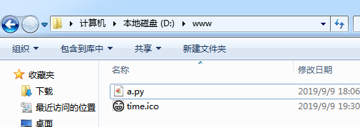
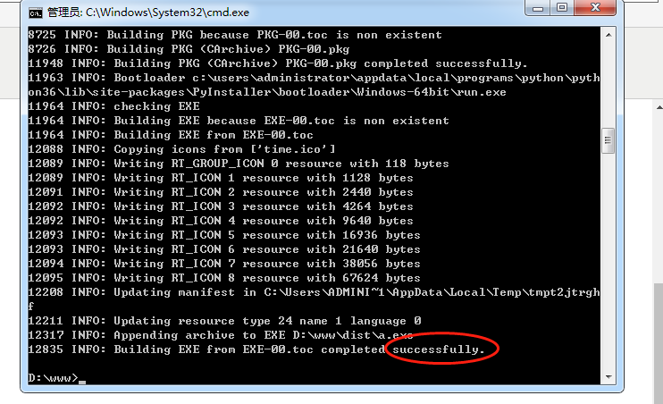
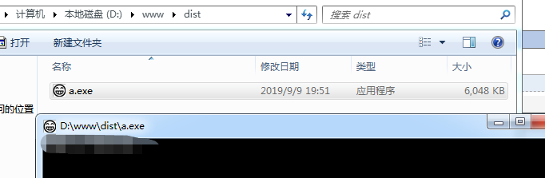

1、准备工作
1、安装pywin32、pyinstaller
2、准备好ico文件
找一个png格式的图片，使用png2ico脚本生成包含以下6个尺寸的ico文件：128×128 64×64 48×48 32×32 16×16。
原理：在不同情况下（比如资源管理器文件列表前面的图标、桌面、开始菜单等）需要不一样尺寸的图标。如果尺寸不合适的话，可能出现有的地方显示正确有的显示不正确的情况。
3、准备好.py文件
2、把py文件和ico文件放入同一目录下

3、cmd下，进入www目录下面，执行 pyinstaller -F a.py -i time.ico
-F 打包一个单个文件，如果你的代码都写在一个.py文件的话，可以用这个，如果是多个.py文件就别用
-i 改变程序的图标，将time.ico添加为可执行文件的资源(只对Windows系统有效)
4、执行结果

5、到dist目录下执行exe文件即可，复制到其它地方执行也没问题
